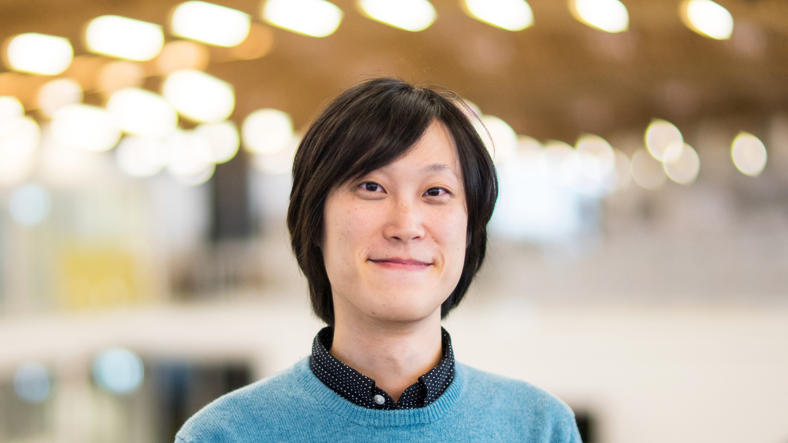

Gene Ting-Chun Kao 高鼎鈞

Short bio:
Gene is a designer, researcher, engineer, and programmer who specialises in computational design, digital fabrication, and visual computing in architecture & computer science. He believes interdisciplinary research boosts innovation. His passion is combining computation and mathematics with design and fabrication. He received a CAS in Computer Science at ETH Zurich, MSc in Integrative Technologies & Architectural Design Research at Stuttgart University, and BArch at Tamkang University. He worked in software development and R&D in both Germany and Taiwan. Gene is a PhD candidate at the Institute of Technology in Architecture at ETH Zurich, where he is a research assistant in the Block Research Group and NCCR Digital Fabrication. He is supervised by Prof. Philippe Block and co-supervised by Prof. Stelian Coros.
Long bio:
Gene is a designer, researcher and programmer who specialises in computational design, digital fabrication in architecture and visual computing in computer science.
In 2013, he graduated with a Bachelor of Architecture degree from Taiwan Tamkang University, earning the Best Project Award for Undergraduate Design Thesis and the Excellent Performance Award of Overall Academic Performance. In 2016, he obtained a Master of Science degree in Integrative Technologies and Architectural Design Research (ITECH) from Stuttgart University. His master's thesis, titled "Assembly-Aware Design of Masonry Shell Structures: A Computational Approach," supervised by Prof. Jan Knippers (ITKE) and Prof. Achim Menges (ICD), and was presented in the Pecha Kucha plenary session in IASS 2017 in Hamburg. During his master study, Gene participated in the computational design group of the ICD/ITKE Research Pavilion 2015-16, which is the winner of the 2017 ArchDaily BUILDING OF THE YEAR Award in the Small Scale Architecture category.
From 2013 to 2014, Gene worked as a research and teaching assistant at the Digital Design & Fabrication LAB (CCC Lab), Tamkang University, under the supervision of Prof. Chen Chen-Cheng. From 2016 to 2018, he was a software developer at Ed. Züblin AG / Strabag AG and focused on research & development, innovation and software development for various construction and national wise research projects.
Gene strongly believes interdisciplinary research boosts innovation. He loves programming, mathematics, geometry, and has developed many open-source projects to combine his research interests in architectural design and computer science. He received a Computer Science CAS degree at ETH Zurich in 2020, focusing on Visual Computing.
Gene is a PhD candidate at the Institute of Technology in Architecture at ETH Zurich, where he is a research assistant in the Block Research Group and NCCR Digital Fabrication. He is supervised by Prof. Philippe Block and co-supervised by Prof. Stelian Coros.
Follow me
License
The content for this site, including blog posts, images and other assets are covered under CC-BY-SA and the source code for this site is covered under MIT.